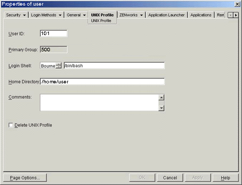
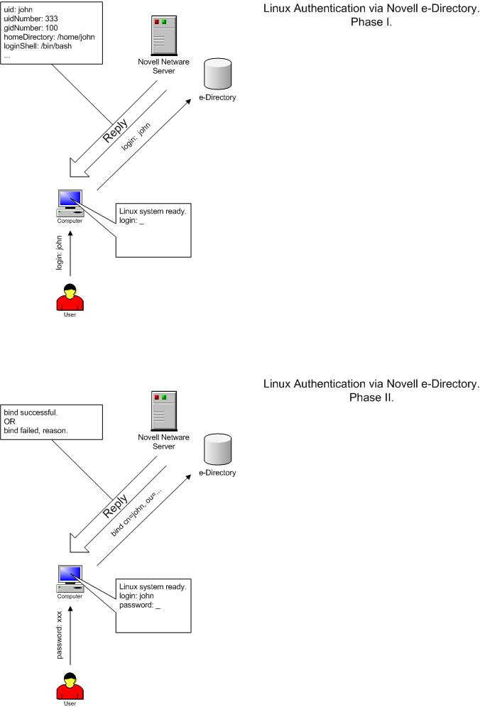

...making Linux just a little more fun!
By Ivan Pesin
|
...making Linux just a little more fun! |
By Ivan Pesin |
The main purpose of this document is to describe and explain steps you need to perform to setup a Linux authentication via Novell e-Directory.
Novell e-Directory is a Novell implementation of an access protocol to X.500-based directory services. Another implementation of this protocol is known as LDAP, Lightweight Directory Access Protocol. LDAP is defined in RFC2251 "The Lightweight Directory Access Protocol (v3)".
A directory is similar to a database, but tends to contain more descriptive,
attribute-based information. The information in a directory is generally read
much more often than it is written. Directories are tuned to give quick-response
to high-volume lookup or search operations. They may have the ability to replicate
information widely in order to increase availability and reliability, while
reducing response time. When directory information is replicated, temporary
inconsistencies between the replicas may be OK, as long as they get in sync
eventually.
The following is a quick start guide to setup Linux authentication and account information fetching via Novell e-Directory.
It is meant to walk you through the basic steps needed to setup authentication procedure. It should be used in conjunction with the other chapters of this document, manual pages, and other materials provided with the default distribution.
If you intend to work with authentication via Novell e-Directory seriously, you should review this entire document before attempting to setup the software.
To setup Novell e-Directory authentication you have to perform following steps:
/etc/ldap.conf configuration file
First of all you have to setup ldap.conf file, which is usually situated in /etc directory. Let's take a look on it:
# your Novell e-Directory server IP address
server 192.168.0.1
# base context
base ou=london,o=acme
# special user, which is used only for NDS tree browsing
# and has appropriate rights
binddn cn=ndsbrowser,ou=london,o=acme
# users password
bindpw ndspass
# enable ssl encryption
ssl yes
# password mode NDS pam_password nds
# special attribute mapping
nss_map_attribute userPassword authPassword
# NDS search scope
scope subb. PAM system configuration
Now we have to change configuration for PAM (pluggable authentication modules) system. For that in RedHat 7.3 we have to change file /etc/pam.d/system-auth. Here it goes:
#%PAM-1.0
auth required /lib/security/pam_env.so
auth sufficient /lib/security/pam_unix.so likeauth nullok
auth sufficient /lib/security/pam_ldap.so try_first_pass
auth required /lib/security/pam_deny.so
account sufficient /lib/security/pam_unix.so
account [default=bad success=ok user_unknown=ignore service_err=ignore system_err=ignore] /lib/security/pam_ldap.so
password required /lib/security/pam_cracklib.so retry=3 type=
password sufficient /lib/security/pam_unix.so nullok use_authtok md5 shadow
password sufficient /lib/security/pam_ldap.so use_authtok
password required /lib/security/pam_deny.so
session required /lib/security/pam_limits.so
session required /lib/security/pam_unix.so
session required /lib/security/pam_mkhomedir.so skel=/etc/skel/ umask=0077
session optional /lib/security/pam_ldap.soSo, we've setup password authentication. Let's go to the next section.
c. Name service switch configuration
Now we've to setup linux account data fetching from Novell e-Directory. For that we have to edit file /etc/nsswitch.conf. Simply check if the lines, which starts from "passwd:", "shadow:" and "group:" contains word "ldap". If not -- you've to add it. On my PC it looks like:
# Look for passwd in local files then in ldap
passwd: files ldap
# Look for shadow in local files then in ldap
shadow: files ldap
# Look for group in local files then in ldap
group: files ldapd. SSL security configuration
Last step we have to perform on Linux box is to setup secure connection to the Novell server. To do it download file RootCert.der from SYS: volume of the Novell server and save it into cert directory /usr/share/ssl/certs. Convert the Novell root certificate using the command:
openssl x509 -in /usr/share/ssl/certs/RootCert.der -inform DER -out \
/usr/share/ssl/certs/RootCert.pem -outform PEMIn the openssl.cnf (on RedHat 7.3 in /usr/share/ssl directory) file set the "value certificate" to point to the RootCert.pem (certificate being the CA certificate) and "my private key" to be the same certificate.
Okay, we've done all things on Linux. Now it's time to switch to Novell server. There are some things that should be done. All things we're going to do can be done via ConsoleOne tool.
e. Novell side configuration
First of all we've to make some changes into NDS <–> LDAP mapping scheme. To do that, open your base context and find "LDAP Group" item. Open properties of this object. In the "General" tab check "Allow Clear Text Passwords" box (it’s for testing purposes).
Now open "Attribute Map" tab. Click "Add" button and add following mappings:
LDAP Attribute NDS Attribute loginShell loginShell uidNumber uidNumber gidNumber gidNumber Close "LDAP Group" properties dialog.
Second step is to setup user account properly. For that right-click on appropriate user and select properties. Open "UNIX Profile" tab and enter the account data:

Here is a short legend:
uid (User ID) - should be unique for all users gid (Group ID) - group number login shell - user’s login shell comment - any comment, full name is an example home directory - user’s home directory.
In this part of the document we will go deeply into background of the Linux authentication via Novell e-Directory process. It mainly consists of two logical parts: password authentication and account data fetching. Understanding of that processes will allow you to setup authentication on other not described linux distributions.
Password authentication via ldap is implemented with pam_ldap module. It has to be installed if you wish to organize password authentication via ldap. For RedHat Linux 7.3 is available nss_ldap RPM package within distribution. It contains all tools, modules and libraries needed as for password authentication, so for linux account data fetching.
Software needed for LDAP authentication is public domain software maintained
by PADL Software Company in Melbourne, Australia. Company runs three Internet
mailing lists that allow users of their software to support each other: nssldap@padl.com,
pamldap@padl.com, and ldap-nis@padl.com. If you wish to subscribe to any of
these mailing lists, send an e-mail to majordomo@padl .com with "subscribe
listname" in the message body.

a. PAM_LDAP and NSS_LDAP.
The ldap.conf file is used to configure LDAP-specific information for the pam_ldap modules and libnss_ldap library. The following list represents minimum required records in this file to provide SSL-encrypted communication with Novell e-Directory server:
host <ip address or hostname of eDirectory server>
base <container at which to begin searching for information in eDirectory>
scope sub - specifies a subtree search.
ssl on - turn on SSL transport encryption
We need to authenticate as a specific user when retrieving user information because of access to some user information not available in the context of anonymous bind. For that the following parameters must be set :
binddn <full LDAP DN of user object to authenticate as>
bindpw <password of the above user>
The following listing shows the example of ldap.conf file :
server 192.168.0.1
base ou=london,o=acme
binddn cn=ndsbrowser,ou=london,o=acme
bindpw ndspass
ssl yes
pam_password nds
nss_map_attribute userPassword authPassword
scope subb. PAM System.
Editing a specific file configures PAM. In RedHat Linux 7.3 you will need to edit file called system-auth situated in the /etc/pam.d directory. An entry in this file defines authentication systems (traditional UNIX authentication, LDAP, smart cards, and so on) which will be used for authentication. Modules can be stacked. Depending on how the modules are stacked and configured, multiple services may be used.
Each entry in the configuration file has three required fields and an optional field.
Linux-PAM separates the tasks of authentication into four independent management groups: account management; authentication management; password management; and session management.
Simply put, these groups take care of different aspects of a typical user's request for a restricted service:
account - provide account verification types of service: has the user's password expired?; is this user permitted access to the requested service?
authentication - establish the user is who they claim to be. Typically this is via some challenge-response request that the user must satisfy: if you are who you claim to be please enter your password. Not all authentications are of this type, there exist hardware based authentication schemes (such as the use of smart-cards and biometric devices), with suitable modules, these may be substituted seamlessly for more standard approaches to authentication - such is the flexibility of Linux-PAM.
password - this group's responsibility is the task of updating authentication mechanisms. Typically, such services are strongly coupled to those of the auth group. Some authentication mechanisms lend themselves well to being updated with such a function. Standard UN*X password-based access is the obvious example: please enter a replacement password.
session - this group of tasks cover things that should be done prior to a service being given and after it is withdrawn. Such tasks include the maintenance of audit trails and the mounting of the user's home directory. The session management group is important as it provides both an opening and closing hook for modules to affect the services available to a user.
When a Linux-PAM aware privilege granting application is started, it activates its attachment to the PAM-API. This activation performs a number of tasks, the most important being the reading of the configuration file(s): /etc/pam.conf. Alternatively, this may be the contents of the /etc/pam.d/ directory.
These files list the PAMs that will do the authentication tasks required by this service, and the appropriate behavior of the PAM-API in the event that individual PAMs fail.
The syntax of the /etc/pam.conf configuration file is as follows. The file is made up of a list of rules, each rule is typically placed on a single line, but may be extended with an escaped end of line: `\<LF>'. Comments are preceded with `#' marks and extend to the next end of line.
The format of each rule is a space separated collection of tokens, the first three being case-insensitive:
service type control module-path module-arguments
The syntax of files contained in the /etc/pam.d/ directory, are identical except for the absence of any service field. In this case, the service is the name of the file in the /etc/pam.d/ directory. This filename must be in lower case.
An important feature of Linux-PAM, is that a number of rules may be stacked to combine the services of a number of PAMs for a given authentication task.
The service is typically the familiar name of the corresponding application: login and su are good examples. The service-name, other, is reserved for giving default rules. Only lines that mention the current service (or in the absence of such, the other entries) will be associated with the given service-application.
The type is the management group that the rule corresponds to. It is used to specify which of the management groups the subsequent module is to be associated with. Valid entries are: account; auth; password; and session. The meaning of each of these tokens was explained above.
The third field, control, indicates the behavior of the PAM-API should the module fail to succeed in its authentication task. There are two types of syntax for this control field: the simple one has a single simple keyword; the more complicated one involves a square-bracketed selection of value=action pairs.
For the simple (historical) syntax valid control values are: requisite - failure of such a PAM results in the immediate termination of the authentication process; required - failure of such a PAM will ultimately lead to the PAM-API returning failure but only after the remaining stacked modules (for this service and type) have been invoked; sufficient - success of such a module is enough to satisfy the authentication requirements of the stack of modules (if a prior required module has failed the success of this one is ignored); optional - the success or failure of this module is only important if it is the only module in the stack associated with this service+type.
For the more complicated syntax valid control values have the following form:
[value1=action1value2=action2...]
Where valueN corresponds to the return code from the function invoked in the module for which the line is defined. The full list of PAM errors is available in /usr/include/security/_pam_types.h . For details refer to your local system documentation.
module-path - this is either the full filename of the PAM to be used by the application (it begins with a '/'), or a relative pathname from the default module location: /lib/security/.
module-arguments - these are a space separated list of tokens that can be used to modify the specific behavior of the given PAM. Such argu ments will be documented for each individual module.
The following listing shows a sample pam.conf file set up NDS authentication for all services in Red Hat Linux 7.3 . File "system-auth" in this distribution is included in each service module. Shown example provides authentications via LDAP, as well as traditional UNIX authentication if LDAP authentication fails. The file is also set up to include account authorization and password
The file is also set up to include account authorization and password management via LDAP and then files if the LDAP module fails.
#%PAM-1.0
auth required /lib/security/pam_env.so
auth sufficient /lib/security/pam_unix.so likeauth nullok
auth sufficient /lib/security/pam_ldap.so try_first_pass
auth required /lib/security/pam_deny.so
account sufficient /lib/security/pam_unix.so
account [default=bad success=ok user_unknown=ignore service_err=ignore system_err=ignore] /lib/security/pam_ldap.so
password required /lib/security/pam_cracklib.so retry=3 type=
password sufficient /lib/security/pam_unix.so nullok use_authtok md5 shadow
password sufficient /lib/security/pam_ldap.so use_authtok
password required /lib/security/pam_deny.so
session required /lib/security/pam_limits.so
session required /lib/security/pam_unix.so
session required /lib/security/pam_mkhomedir.so skel=/etc/skel/ umask=0077
session optional /lib/security/pam_ldap.soc. Name Switch Service.
The nsswitch.conf file, also located in the /etc directory, is used to configure which system will be used for shadow information (the shadow file) and password information (for authentication purposes). Each entry in the file consists of the name of the function and then a list of the modules to be referenced.The sample nsswitch.conf file listed below:
passwd: files ldap
shadow: files ldap
group: files ldapd. SSL Security.
In order to setup an SSL security, your Linux system must have a copy of the LDAP server's Trusted Root certificate. So you have to download file RootCert.der from SYS: volume of your Novell server to certs directory /usr/share/ssl/certs. Then you will need to convert the Novell root certificate using the command:
openssl x509 -in /usr/share/ssl/certs/RootCert.der -inform DER -out \
/usr/share/ssl/certs/RootCert.pem -outform PEMAfter converting set the value certificate to point to the RootCert.pem (certificate being the CA certificate) in the openssl.cnf (on RedHat Linux 7.3 system in /usr/share/ssl). Also set my private key to be the same certificate.
e. Novell e-Directory configuration
Now last steps of our battle for authentication are to setup Novell e-Directory server. We have to add some attributes in NDS <–> LDAP mapping scheme. For that you have to open in ConsoleOne your base context, find "LDAP Group" item, right-clicks with mouse and select "Properties...".
Now open "Attribute Map" tab. Find LDAP attributes with names "uidNumber", "gidNumber" and remove them, because there are broken mappings. Instead create new mappings, for that click "Add" button and add following mappings:
LDAP Attribute NDS Attribute loginShell loginShell uidNumber uidNumber gidNumber gidNumber The very last you should input apropriate values in "UNIX Profile" tab of each user. After that you can login linux box using your Novell credentials.
I want to notice some things. First: I've used in my investigation Novell Netware 6 with e-Directory 8.6.0 as server and my RedHat 7.3 linux box as client. I think that if you have some other version of software (newer) it should work also, may be with some evident changes. So, as far as I know if you'll use e-Directory 8.6.2 or higher there is fixed problem with attribute mappings, so you can omit appropriate section. Next: Unfortunelly we cannot setup fully secure authentication. At lease I don't see a way to do it. It is concerned with special user which has rights to browse NDS tree. File /etc/ldap.conf has to have +r for all users. So, everyone who has access to the linux box can see that password. It's not a really problem, while you gave rights only to read. But if you wish uses to set/change passwords directly from the command line by itselfs, you should give write rights to the special user. And here is a security hole. If you have a clue how to avoid such situation -- mail me ;-) Last but not least: product and company names mentioned herein may be the trademarks of their respective owners.
![[BIO]](../gx/2002/note.png) I work at N-iX Team of Newcomp Computersysteme GmbH
as senior network administrator. Currently I investigate communication of Linux
with other network server operation systems and support a lot of production
Linux servers. In the spare time I participate in Russian
Linux Gazette project, wich is official Russian-language mirror of LinuxGazette.
I work at N-iX Team of Newcomp Computersysteme GmbH
as senior network administrator. Currently I investigate communication of Linux
with other network server operation systems and support a lot of production
Linux servers. In the spare time I participate in Russian
Linux Gazette project, wich is official Russian-language mirror of LinuxGazette.